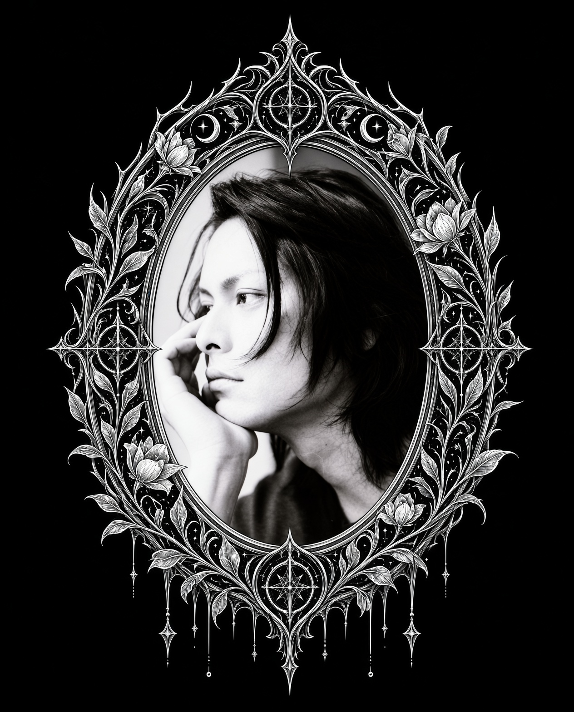

Somewhere Between Dreams

A personal journal of writing, poetry, photographs and dreams inspired by my muse.
The Muse

Recently Written
{% for post in site.posts limit:4 %}
{{ post.date | date: "%B %-d, %Y" }}
{{ post.title }}
{{ post.preview | default: post.excerpt | strip_html | truncate: 150 }}
Read entry ✧
{% endfor %}
{% unless site.posts.size > 0 %}
The pages are still waiting to be written...
{% endunless %}